Equipamentos
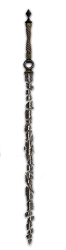
ABYSSERAM
Flying Waters: Can be found by defeating the Bourgeon at The Continent, south of Stone Wave Cliffs.
Flying Manor: Drops from the Bourgeon on the left side of the Eveque bosses' area.
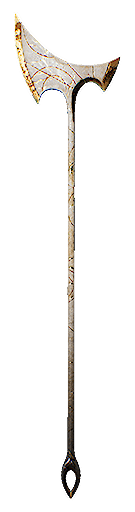
BOLDAM
Location: The Continent
Acquired as a drop reward for defeating the Chromatic Reaper Cultist boss
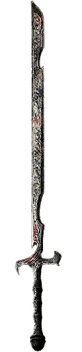
chevalam
Location: Crimson Forest
Defeat the Chromatic Gold Chevaliere boss for this weapon to drop. You can pick it up at the center of the large salver.
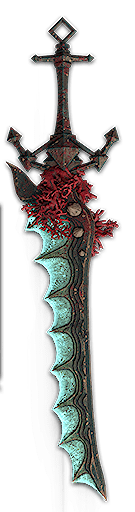
cruelaram
Location: Flying Waters This weapon can drop from the Cruler enemy upon defeating it for the first time
Location: Coastal Cave Can purchase a level 12 Ceruleram from a Bruler blacksmith in Coastal Cave for 19,795 Chroma. Defeat the Bruler and Cruler enemies to unlock their wares.
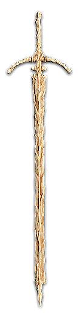
cultam
Location: Monoco's Station
Acquired as a drop reward for defeating the Chromatic Reaper Cultist boss
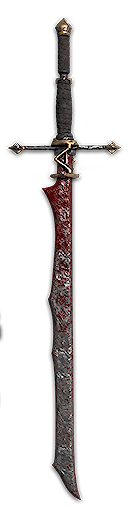
delaram
Location: Stone Wave Cliffs
Obtained from a Paint Cage. From the Entrance Flag, hug the right wall and you will find a rope which leads to the Paint Cage.
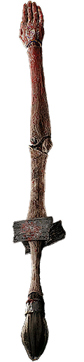
demonam
Location: Gestral Village
Level 5 variant sold by the Gestral Merchant: Jujubree Challenge the gestral merchant to a fight and win to unlock this weapon in its shop for 4,002 Chroma.
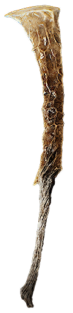
gaulteram
Location: The Continent Can be found by defeating the Bourgeon on The Continent, south of Stone Wave Cliffs.
Location: Yellow Harvest Weapon may also drop from the first Gault enemy you encounter in the location.
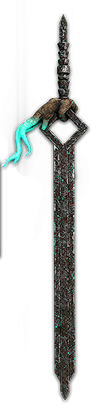
lanceram
Spring Meadows: Drops from a Lancelier enemy encountered just past the Expedition 81 Expedition Flag (Meadows Corridor).
Coastal Cave: Can purchase a level 12 Lanceram from a Cruler blacksmith in Coastal Cave for 21,275 Chroma. Defeat the Bruler and Cruler enemies to unlock their wares.
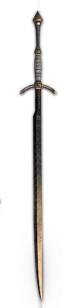
noaharam
Starting weapon
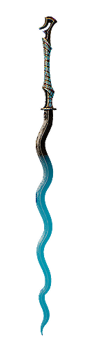
nosaram
Location: Renoir's Drafts
Sold by the Gestral Merchant Grour after defeating him in a duel.
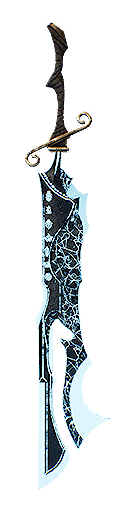
seeram
Location: Coastal Cave
Can purchase a level 12 Seeram from a Cruler blacksmith in Coastal Cave for 21,275 Chroma. Defeat the Bruler and Cruler enemies to unlock their wares.